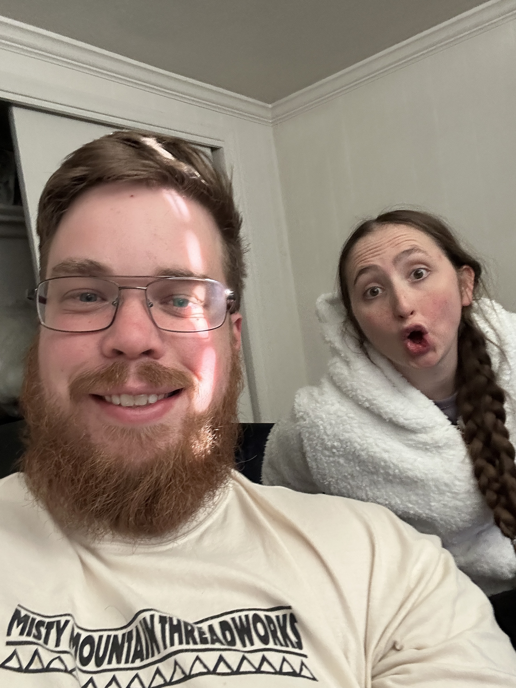

Biomedical Informatics · Data Science · AI
I'm a graduate student in Biomedical Informatics at the University of Utah, where my work sits at the intersection of machine learning and genomics. My research has focused on training AI models for high-precision tumor variant calling and building GPU-accelerated bioinformatics pipelines for precision oncology. Before that, I studied biology at Utah Tech University and spent several years teaching — in the lab, in the classroom, and one-on-one — which continues to shape how I think about communicating complex ideas. Outside of research, I make art.
An interactive look at migration patterns across North America
See My Projects